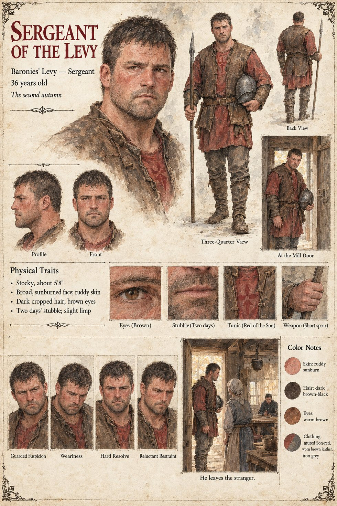

Sergeant of the Levy
Sergeant of the Baronies' levy, in the red of the Son · unnamed · 36 years old by his sheet
The war reaches the Mill of the Two Weirs in the second autumn, and it comes as a request for porridge, made by a sergeant of the Baronies' levy in the red of the Son, who stands in the kitchen doorway with his helmet under his arm and the expression of a man who has been told that hunger is no excuse and has not been told what is. Ermengarda gives him a bowl. An hour later she gives one to a corporal of the Order in grey, who has come on the same errand by the other road, and sets the two of them at opposite ends of the same bench with the kettle between them; neither man can bring himself to be the first to refuse.
He has seen the stranger before. The manuscript says that the Baronies' sergeant had stood in the yard on the third of Iverin and knew what he could do with a pair of ash swords, and that the levy came for the stranger twice that winter. When the sergeant finds him in the mill-yard at the slaughter with both blades hung on a nail in the byre and his hands open at his sides, in the posture of a man waiting to be told where to report, he goes away without his name. It does not identify him with Sicard of Case 2231, the bailiff's sergeant at Castelmaur, or with any other sergeant in the case. The sheet's thirty-six years, stocky five-foot-eight frame, broad sunburned face, cropped dark hair, brown eyes, stubble, slight limp, short spear and leather jerkin are its own.